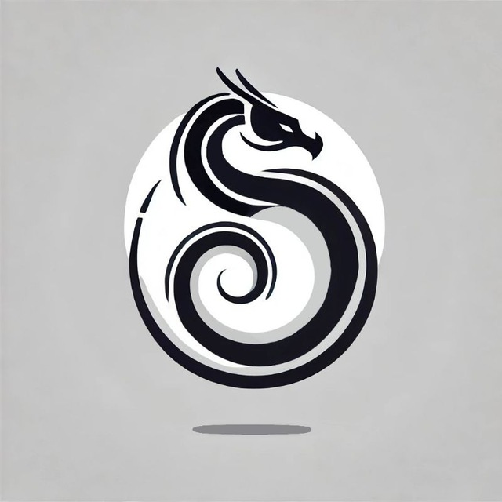

Привет! Я Некс.
Мне 15 лет, Я из Украины, и с самого детства я мечтал создавать что-то своё. Я всегда увлекался программированием, 3D-дизайном и созданием игр, проводя часы за изучением новых инструментов и технологий. Сейчас я работаю над своим самым большим и амбициозным проектом — бумер-шутером Ragecore.
Ragecore — это игра, вдохновленная атмосферой ада и христианскими библейскими мотивами. Её главный герой — алкаш-ковбой, который, несмотря на своё сомнительное прошлое, встаёт на путь войны с демонами. Я вдохновляюсь культовыми играми, такими как DOOM, Quake и Ultrakill, чтобы создать проект, полный адреналина, кровавого экшена и хардкорных сражений.
Я занимаюсь разработкой 3 месяца полностью самостоятельно: пишу код, создаю 3D-модели, текстуры, анимации и даже озвучку. Мне нравится прорабатывать каждый элемент до мелочей, чтобы создать уникальную атмосферу и сделать игру незабываемой. Для меня разработка — это больше, чем работа. Это способ выразить себя, вложить душу в каждый кадр и каждую механику.
Помимо разработки игр, я обожаю цифровое искусство. Я рисую концепты, придумываю персонажей, строю миры и стримлю процесс своей работы. Делюсь своими идеями и показываю, что даже в одиночку можно создать что-то великое, если есть страсть и упорство.
Моя мечта — сделать Ragecore настоящей культовой игрой, которая найдёт своих фанатов среди тех, кто ценит хардкорный экшен. Я хочу вдохновить других разработчиков, особенно начинающих, и показать, что создание игр — это захватывающее приключение, которое открыто для каждого.
Если вам интересно, чем я занимаюсь, или вы хотите поддержать меня, пишите и подписывайтесь на мои соц-сети! Я всегда рад новым знакомствам, интересным беседам и вашей обратной связи.